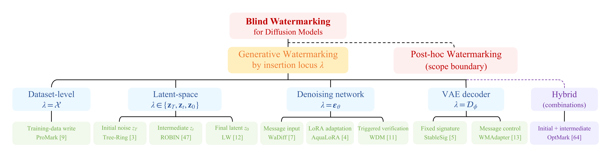
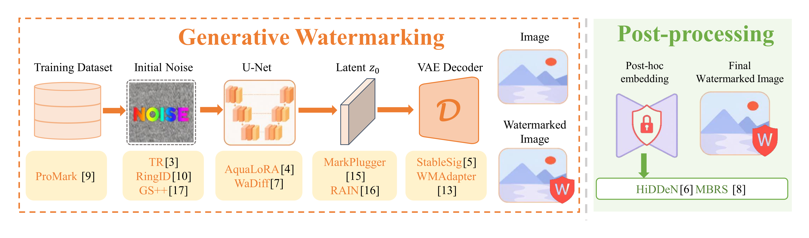
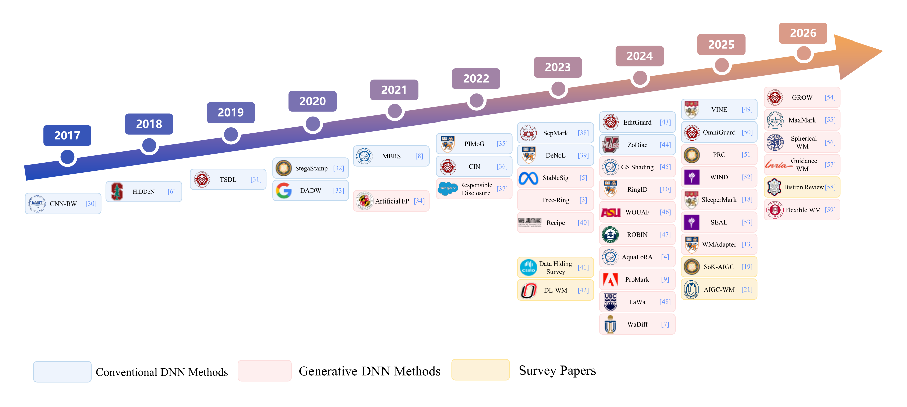
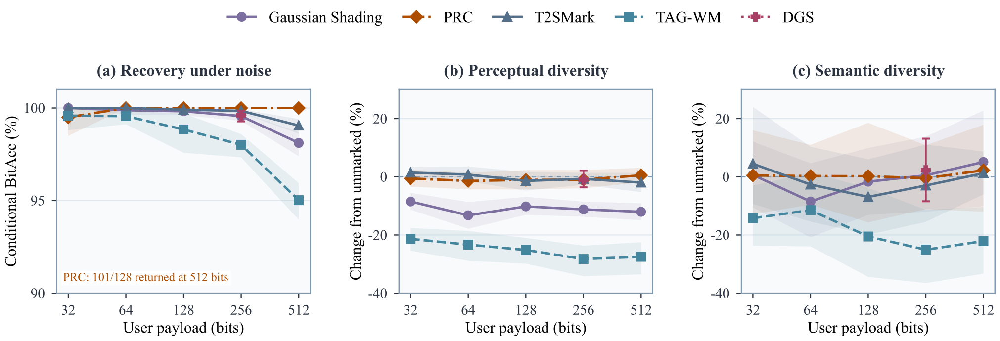

Survey · Under review
LocWM: A Survey on Blind Generative Watermarking for Diffusion Models
LocWM maps where watermarks enter the diffusion pipeline and how those choices shape recovery. Browse figures from the survey and search the literature index for papers and code.
If this map helps your research, please star the project and support our papers
Survey figures

Open full-size figureWhere watermarks are embedded
Four families target training data, latent states, the denoiser, and the VAE decoder.

Open full-size figureFrom training data to rendered image
Watermarks can be added during generation or after rendering.

Open full-size figureWatermarking milestones, 2017–2026
Selected milestones from learned image watermarking to generative watermarking.

Open full-size figurePayload, recovery, and image diversity
Across payload sizes, compare bit recovery under noise and within-prompt diversity at fixed watermark identity.
01 / SIGNALSAutomatically generated from the paper index.
Papers by year
COUNTVenues
TOP 0602 / INDEX
Paper index
| Year | Paper / authors | Venue | First institution | Code |
|---|
∅
No records match this query.